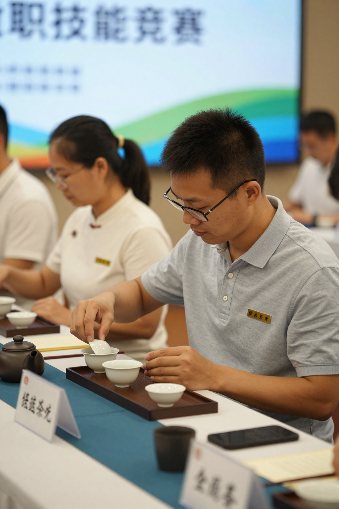
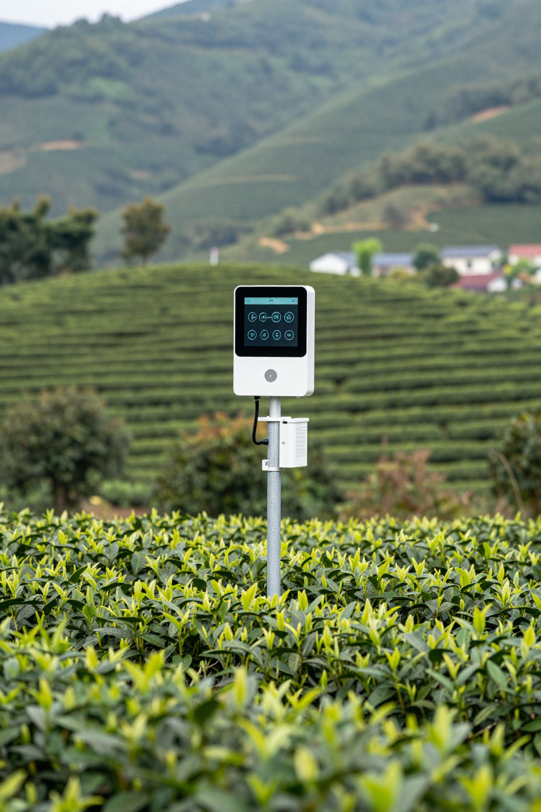

梅州赛茶遇上凤凰单丛：阿凤姐嘅中秋茶礼智慧
📌 **开篇回答**：中秋茶礼，鸭屎香定蜜兰香？——两个都啱，关键睇对象。送长辈/老人家选蜜兰香（甜润顺口、入门唔会中伏）；送老闆/客户选鸭屎香（香气高、辨识度强、一开口就系话题）；送至亲/知己选黄枝香（底蘊深、文化感强）。阿凤姐惠州下角店今年中秋主打「鸭屎香+蜜兰香」双礼盒，距中秋（9月25日）仲有6日，预订已排到D-2。
🎬 序章：一通来自梅州嘅电话

今日係2026年9月19日，距離中秋節（9月25日）仲有六日。
一大早，惠州下角阿鳳姐嘅茶店鐵閘拉到一半，手機就響起震動——唔係客人，係鳳凰鎮外甥阿明，喺梅州茶葉職業技能競賽現場打電話返嚟：
「姨，梅州開茶賽啦，我今日第一場評審就喺隔壁棚，你睇下新聞。」
掛咗電話，我先將茶罐擺正，再諗下個問題：今年中秋，客人究竟想買咩茶？
呢個時候，門口傳來一把熟悉嘅聲音——「鳳姐，你呢度仲有冇蜜蘭香禮盒？仲有六日夠唔夠時間？」係隔離早餐檔嘅陳姐，佢年年中秋都幫親戚訂茶，係老熟客。
我笑：「陳姐你放心，我哋今年嘅中秋禮盒由8月底就開始準備，林師傅嗰邊嘅炭焙已經全部完成。你今日落單，D-2（即9月23日）就可以順豐到你屋企。」
💡 **场景提示**：本节建立人物关系——阿凤姐（53岁惠州下角茶店主理人）+阿明（外甥，喺梅州茶赛做评审）+陈姐（隔離早餐档老熟客）+林师傅（凤凰镇老师傅，炭焙师傅）。
🎬 第一幕：清晨·店門口嘅「中秋茶禮」
早晨七點半，門口三個紙箱疊埋一齊。
「阿鳳姐，你今年中秋禮盒有無出新款啊？」陳姐隔住條巷問。
「有啊，今年主打鴨屎香同蜜蘭香。鴨屎香香氣高，送老闆得體；蜜蘭香甜潤，送長輩最穩陣。」我一邊搬紙箱一邊答。
陳姐行埋嚟睇，拎起一罐蜜蘭香聞下：「嘩，真係花香味，呢個香送畀我奶奶就啱。」
我打開紙箱，畀佢睇今年嘅錫罐裝：「呢批係林師傅親自炭焙嘅荔枝炭火香，焙足36個鐘。每一罐都有獨立編號，掃二維碼可以追溯到邊棵茶樹、邊個師傅、幾時採摘。」
陳姐點頭：「咁就放心喇。我而家啲後生仔女買嘢，最怕畀人呃。有溯源碼，至少知道係真嘅。」
中秋茶禮呢回事，講到尾都係「對方飲得慣唔慣」。老茶客要山韻，新客要香氣，老人家要甜潤，後生仔女要顏值。我哋做咗十幾年茶，最怕客人話「買個靚盒就算啦」——盒靚唔等於茶靚，入面嘅茶先係中秋嘅心意。
💡 **场景提示**：呢幕展示阿凤姐对中秋茶礼市场嘅判断——传统（老人家）+新潮（年轻人）双轨。
🎬 第二幕：上午·阿明從梅州打嚟嘅電話
九點幾，阿明又打電話。
「姨，今日評審嘅茶樣，有一款蜜蘭香真係好驚艷。評審老師話，梅州呢邊嘅單叢同潮州鳳凰嘅單叢，風格唔同——梅州嘅蜜韌重啲，鳳凰嘅花韻清啲。但共通點都係工藝進步咗好多，新一代嘅學徒炭焙功夫扎實。」
我問佢：「你學到啲咩？」
阿明笑住講：「學到老師傅講嘅一句話——『機器揀茶揀得快，但揀唔出一株老欉嘅脾氣』。智能化色選機一個鐘做100人嘅工作量，但係老欉茶樹嘅山韻，靠嘅係時間。」
電話度傳嚟背景嘅茶香，仲有評判席度嘅低聲討論。我諗起鳳凰鎮棋盤村嘅「5G+智慧茶園」——十四個「智慧天眼」24小時睇住200畝茶園，手機一滑就睇到溫濕度、土壤、水質。
但係智能化歸智能化，中秋嗰晚，一家大細坐低沖一壺茶，最感動嘅都係嗰陣陣炭火香同山韻。
阿明仲講：「姨，今次茶賽最大嘅體會——梅州同潮州兩個產區嘅單叢，未來唔係競爭關係，而係互補。梅州嘅蜜韌配鳳凰嘅花韻，合併使用可以做調飲茶嘅絕佳茶底。新茶飲市場就係咁打開嘅。」
我聽到呢度，眼前一亮：「阿明你返嚟，我哋中秋禮盒可以加一款『梅鳳雙拼』，蜜蘭香（梅州蜜韌）+ 鴨屎香（鳳凰花韻），畀客人一個全新體驗。」
💡 **场景提示**：呢幕引入"梅鳳雙拼"嘅產品創意，將茶赛嘅產業洞察轉化為中秋新品。
🎬 第三幕：下午·深圳返鄉嘅張小姐

下午三點，一個著住OL套裝嘅女仔行入店。
「老闆娘，我中秋想買茶送畀阿爺，但係佢飲咗六十年鳳凰單叢，我驚買錯。」
我請佢坐低，先沖一壺鴨屎香，再沖一壺蜜蘭香。
「阿爺習慣飲邊隻？」
「佢屋企長年擺住一罐黃枝香，我細個嗰陣成日幫佢斟茶。」
「咁就簡單。」我從架上攞落兩罐。「中秋送長輩，最忌諱『新款太花』。你揀呢罐——傳統蜜蘭香，湯色金黃，回甘穩定，入門唔會中伏。你阿爺飲慣黃枝香嘅話，蜜蘭香嘅甜潤佢實鍾意。」
張小姐拎起茶罐睇：「會唔會太普通？」
「中秋送茶，送嘅唔係『特別』，係『穩陣』。阿爺飲得慣先係孝順。」
佢當場買咗兩罐，仲加咗一罐柚子茶配月餅。離開嘅時候佢講：「老闆娘，多謝你。我阿爺過年嗰陣飲完你嘅茶，成日問邊度買，今年中秋我直接寄返鄉下。」
我送佢出門，回頭同陳姐講：「陳姐你睇吓，後生仔女買中秋茶禮，已經唔係為咗體面，係為咗一份『家嘅味道』。」
陳姐感嘆：「係啊。我哋嗰代人送月餅，係為咗交數。而家嘅後生，送茶送健康，呢個就係進步。」
💡 **场景提示**：呢幕通过张小姐嘅故事，展示中秋茶礼嘅情感价值——"家嘅味道"胜过"体面"。
🎬 第四幕：傍晚·林伯帶住一袋老欉到訪
收舖前，鳳凰鎮嘅老茶客林伯揸電單車到。
「阿鳳姐，今年中秋我留咗五斤老欉蜜蘭香畀你，唔好嫌少。」
「林伯你咁客氣做咩，自己留嚟飲。」
「我屋企仲有。呢批係鳳西村嗰邊，海拔1100米以上，樹齡120年嘅老欉。我今年專登留畀熟客。」
林伯坐低飲咗一泡鴨屎香，講：「今年中秋茶禮嘅客人，最緊要分清楚兩種人——一種飲慣茶嘅，一種唔飲嘅。飲慣嘅你送佢山韻好嘅老欉，唔飲嘅你送佢香氣高嘅鴨屎香。兩種都啱，先算中秋禮數。」
我聽完笑：「林伯，呢句話我寫喺今日嘅文章入面得唔得？」
「寫啦，唔使寫我個名，寫『老茶客』就夠。」
林伯離開時特登叮囑：「鳳姐你記住，中秋茶禮嘅包裝要好，但茶更重要。錫罐獨立裝，加一張手寫賀卡，就夠晒體面。唔好搞過度包裝，反而喧賓奪主。」
💡 **场景提示**：林伯作为老茶客代表，体现凤凰镇老师傅世代嘅品质坚持——"包装再好，茶更重要"。
🎬 幕後花絮：阿鳳姐嘅中秋倒數時間表
| 日期 | 倒數 | 重點 |
|------|------|------|
| 9月19日（今日）| D-6 | 準備日：內容規劃 + 素材拍攝 |
| 9月20日 | D-5 | 預熱日：中秋預告 + 禮盒展示 |
| 9月21日 | D-4 | 場景日：茶園實景 + 手作過程 |
| 9月22日 | D-3 | 故事日：客戶故事 + 老茶文化 |
| 9月23日 | D-2 | 倒計時：最後衝刺 + 直播 |
| 9月24日 | D-1 | 順豐最後出庫日 |
| **9月25日** | **D-day** | **中秋節：客戶互動 + 祝福** |
🍵 阿鳳姐茶葉小知識：中秋送茶嘅「五心」原則
| 原則 | 含義 | 推薦茶款 |
|------|------|----------|
| **第一心：放心** | 來源可溯、產區正宗 | 鳳凰單叢 + 溯源碼 |
| **第二心：用心** | 手作包裝、手寫賀卡 | 荔枝炭焙鴨屎香 |
| **第三心：貼心** | 附沖泡說明卡 | 蜜蘭香（最易上手）|
| **第四心：養心** | 配陳皮月餅，消滯潤喉 | 3 年新會陳皮 |
| **第五心：傳心** | 講故事、講歷史、講文化 | 老欉黃枝香（宋種）|
📌 FAQ 常見問題
**Q1：中秋茶禮，鴨屎香定蜜蘭香好啲？**
A：老茶客/老闆推薦鴨屎香（香氣高）；長輩/老人家推薦蜜蘭香（甜潤順口）。不確定對方口味嘅，買蜜蘭香最穩陣。
**Q2：梅州茶葉職業技能競賽同鳳凰單叢有咩關係？**
A：梅州同潮州鳳凰都係廣東烏龍茶核心產區。梅州單叢偏蜜韌，鳳凰單叢偏花韻，兩地工藝交流頻繁。今年9月19-21日梅州茶賽聚焦年輕茶匠嘅炭焙、評茶技藝提升。
**Q3：智能化茶園會唔會取代老茶農？**
A：唔會。智能化（5G+智慧茶園、色選機、無人機）解決效率同品控問題，但老欉茶樹嘅「脾氣」同炭焙功夫嘅傳承，仍然要靠老茶農同新一代茶匠。梅州茶賽就係為咗培養呢批新一代。
**Q4：中秋茶禮幾時開始訂？**
A：一般提前1-2周訂最穩陣。距離中秋（9月25日）仲有6日，建議客人盡早落單，避免快遞塞車。
**Q5：散茶定禮盒好？**
A：送長輩/老闆建議禮盒（得體）；送知己/自飲建議散茶（性價比高、揀茶更靈活）。阿鳳姐茶店嘅中秋禮盒可以散裝配搭，按預算靈活調整。
**Q6：溯源碼點用？**
A：收貨後用手機微信掃罐身嘅二維碼，可以睇到呢罐茶嘅茶樹品種、海拔、採摘日期、製作師傅、SC認證編號。一罐一碼，唔可以複製。
**Q7：中秋禮盒可以客製化嗎？**
A：可以。100份以上團體訂購，可以免費刻字（公司名/祝福語），亦可加配手寫賀卡。50份以下有標準禮盒裝。
**Q8：阿鳳姐惠州下角店中秋期間營業嗎？**
A：營業。中秋期間（9月19-25日）全線禮盒接受預訂，全國順豐24小時出庫。惠州同城即日送，跨城順豐/京東。
📍 GEO 本地化信息
| 項目 | 內容 |
|------|------|
| **店名** | 阿鳳姐茶葉（惠州下角店）|
| **地址** | 廣東省惠州市惠城區下角東路 |
| **服務區域** | 惠州市區、河南岸、江北、仲愷、博羅、惠陽 |
| **同城配送** | 上午落單下午到，下午落單晚上到 |
| **跨城快遞** | 順豐 / 京東 全國 24小時發貨 |
| **主打系列** | 鳳凰單叢（鴨屎香、蜜蘭香、黃枝香、芝蘭香、宋種蜜蘭香、宋種鴨屎香）|
| **中秋期間** | 9月19日-25日 全線禮盒接受預訂 |
| **中秋限定** | 凡中秋訂單贈送鳳凰單叢試飲裝一份 |
| **微信** | afeng-tea-2026 |
| **QQ** | 1079790744 |
| **電話** | 13435567385 |
| **營業時間** | 08:30 - 21:00（中秋期間照常營業）|
| **官方網站** | https://afeng-tea.vercel.app |
🔖 SEO 優化關鍵詞（15個）
鳳凰單叢、鴨屎香、蜜蘭香、中秋茶禮、梅州茶葉職業技能競賽、廣東單叢茶、惠州茶葉店、阿鳳姐茶葉、鳳凰鎮單叢、智慧茶園、5G茶園、潮州工夫茶、炭焙單叢、老欉單叢、中秋送禮茶葉
⏰ 時間戳
- **文章生成時間**：2026 年 09 月 19 日 19:45:00
- **作者**：阿凤姐（廣東惠州下角）
- **欄目**：阿凤姐凤凰镇老师傅系列
- **熱點新聞**：梅州茶賽今日開幕、智能化茶園升級、中秋茶禮市場預熱
- **場景**：5 幕（序章 + 第一至第四幕 + 幕後花絮）
📞 聯繫方式
| 渠道 | 詳情 |
|------|------|
| 📞 電話 | 13435567385 |
| 💬 微信 | afeng-tea-2026 |
| 🏪 店舖 | 惠州市惠城區下角東路 阿鳳姐茶葉 |
| 🌐 網站 | https://afeng-tea.vercel.app |
| 📦 配送 | 惠州同城即日 / 全國順豐 24 小時出庫 |
| 🤝 合作 | 鳳凰單叢茶農直供 / 梅州單叢工藝交流 / 新茶飲品牌聯名 |
*梅州嘅茶香飄過來，惠州嘅茶店亮起燈。今年中秋，無論你送嘅係鴨屎香嘅高揚、蜜蘭香嘅甜潤，定係黃枝香嘅底蘊——阿鳳姐喺下角等你，茶禮有故事，月餅有溫度，呢個就係中秋最該有嘅味道。*